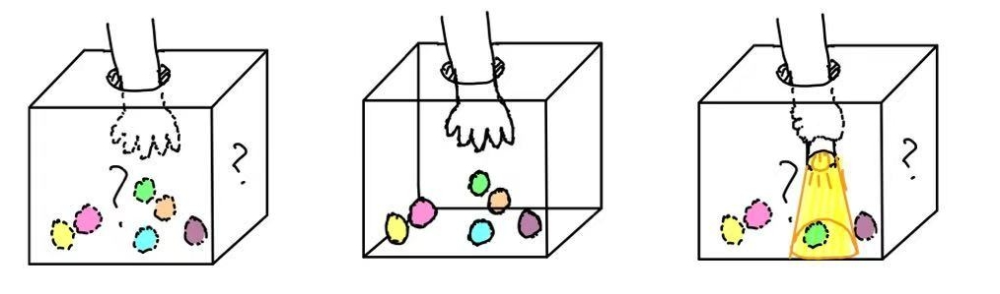

A Neuroengineering Exploer and a BCI Pioneer
Hello! My name is CHENGQI ZOU. You're welcomed to call me by my English name Kay. I'm a final year undergraduate student major in Biomedical Engineering at CUHK. I am passionate about AI implementation in neural decoding, neuroengineering, and transformer-based BCI. I'm dedicated to empowering people with disabilities to return to noral life through neural signal decoding and BCI techonology development. I enjoy engaging mayself in new things, exploring different fields, and sharing my insights about neuroengineering with you.
Beyond neuroengineering and BCI, I also have a keen interest in materials development and art. I believe interdisciplinary thinking can lead to broader perspectives and deeper understanding.
Outsides the research and academic, I likes musicals, playing guitar and saxophone. In my opinion, playing and enjoying music is similar to doing research, for they both organize different basic units into a beautiful and harmonious expression.
Illustration of My Research Philosophy: Exploring a 'Black box':
During my research, I love to read new and interesting papers to get inspirations for neruoengineering research. Here decuments some literature I've read and I'm glad to share my thoughts with you.